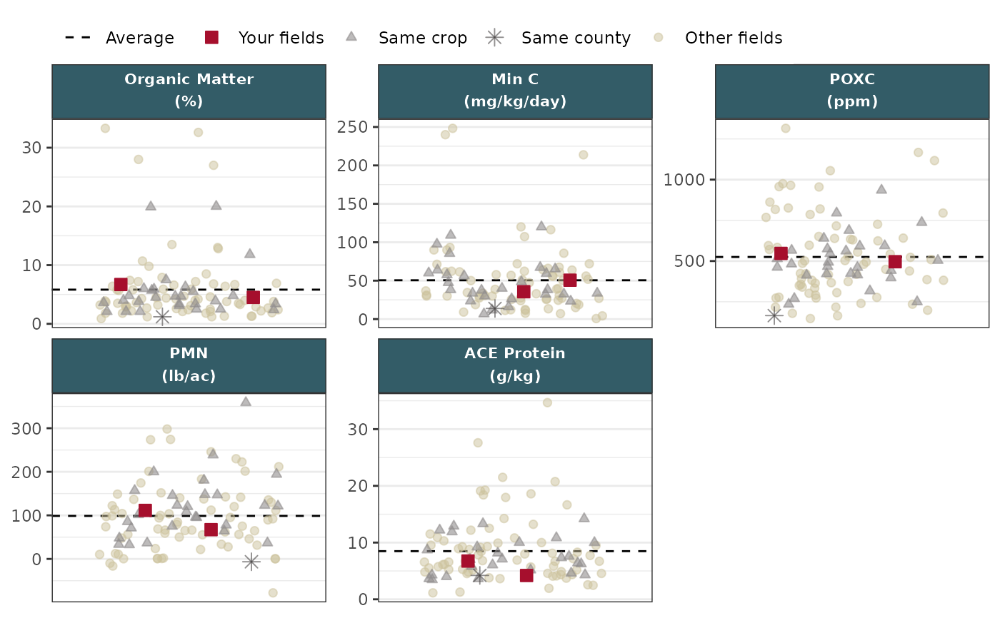

data_wrangling.R wrangles the data into the specific structure shown in the below example. Currently, many variables and values are hard-coded into this function. In future work, we hope to broaden this function's flexibility. See the below example for what the input data structure must look like.
Usage
make_strip_plot(
df,
output,
panel_spacing_x = 6,
panel_spacing_y = 30,
font_family = "Poppins",
primary_color = washi::washi_pal[["standard"]][["red"]],
secondary_color = washi::washi_pal[["standard"]][["ltgray"]],
other_color = washi::washi_pal[["standard"]][["tan"]],
primary_accent_color = washi::washi_pal[["standard"]][["blue"]]
)Arguments
- df
Dataframe containing columns:
category,abbr_unit,unit,dummy, andsampleLabel.- output
Type of ouput: either
"static"or"html"- panel_spacing_x, panel_spacing_y
Spacing between facet panels in units
linewhenoutput = "html". Defaults to6forxand30foryfor rendering in producer reports. These default values seem to look the best with the dimensions of the plot outputs in the reports. This argument is used to deal withplotlyissues. Seemake_plotly()for examples.- font_family
Font family to use throughout plot. Defaults to
"Poppins".- primary_color
Color of producer's sample points Defaults to WaSHI green.
- secondary_color
Color of sample points with
"Same crop"or"Same county"values in thecategorycolumn. Defaults to WaSHI gray.- other_color
Color of sample points with
"Other fields"value incategorycolumn. Defaults to WaSHI tan.- primary_accent_color
Color of facet strip background. Defaults to WaSHI blue.
Examples
# Read in wrangled plot data
# See `data_wrangling.R` for processing steps
path <- soils_example("dfPlot.csv")
df <- read.csv(
path,
encoding = "UTF-8"
)
# The data structure necessary to render the df triangle
dplyr::slice_sample(
df,
n = 1,
by = category
) |>
dplyr::glimpse()
#> Rows: 4
#> Columns: 23
#> $ year <int> 2022, 2023, 2022, 2023
#> $ dummy <chr> "dummy", "dummy", "dummy", "dummy"
#> $ category <chr> "Other fields", "Same county", "Same crop", "You…
#> $ sampleLabel <chr> "Result:", "County 9<br>Cereal Grain<br>Result:"…
#> $ sampleId <chr> "22-IOX04-04", "23-DJU01-03", "22-BBH06-01", "23…
#> $ farmName <chr> "Farm 060", "Farm 148", "Farm 078", "Farm 150"
#> $ producerName <chr> "Alisa", "Raashid", "Ian", "Shanna"
#> $ producerId <chr> "IOX04", "DJU01", "BBH06", "WUY05"
#> $ fieldName <chr> "Field 04", "Field 03", "Field 01", "Field 01"
#> $ fieldId <int> 4, 3, 1, 1
#> $ county <chr> "County 13", "County 9", "County 17", "County 9"
#> $ crop <chr> "Herb", "Cereal Grain", "Hay/Silage", "Hay/Silag…
#> $ texture <chr> "Clay Loam", "Loamy Sand", "Loam", "Loamy Sand"
#> $ longitude <int> -121, -120, -118, -119
#> $ latitude <int> 46, 48, 49, 49
#> $ measurement <chr> "clay_%", "WHC_in.ft", "wsa_%", "bd_g.cm3"
#> $ value <dbl> 25.00, 2.73, 86.60, 1.30
#> $ measurement_group <chr> "physical", "physical", "physical", "physical"
#> $ order <int> 3, 7, 6, 5
#> $ measurement_full_name <chr> "Clay", "Water Holding Capacity", "Water Stable …
#> $ abbr <chr> "Clay", "WHC", "Agg. Stability", "Bulk Density"
#> $ unit <chr> "%", "in/ft", "%", "g/cm³"
#> $ abbr_unit <chr> "Clay <br>(%)", "WHC <br>(in/ft)", "Agg. Stabili…
# Make sure class of `category` is `ordered factor` with `Your fields` at the
# end so it is plotted on top of the other points
df$category <- factor(
df$category,
levels = c(
"Other fields",
"Same county",
"Same crop",
"Your fields"
),
ordered = TRUE
)
class(df$category)
#> [1] "ordered" "factor"
levels(df$category)
#> [1] "Other fields" "Same county" "Same crop" "Your fields"
# Make the plot
make_strip_plot(
df,
output = "static",
font_family = "sans"
)
